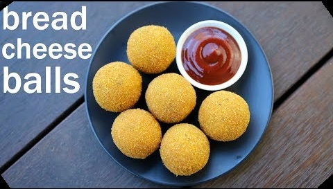

Here's what you need...
This is the recipe along with ingredients and procedure for the mouth watering snacks, Cheese
Balls.
Brief information about....
Cheeeese Baaaalllls.....
Cheese balls include potatoes, bread, and as the name shows, balls of cheeeeeeeeeeeeese....!
Cheese is stuffed in potato and bread balls and deep fried in oil, till golden brown.

Ingredients:
-
2 potato, boiled & mashed
-
1 chilli, finely chopped
-
½ tsp ginger paste
-
2 tbsp coriander, finely chopped
-
¼ tsp pepper, crushed
-
1 tsp mixed herbs
-
¼ cumin powder
-
½ tsp salt
-
2 slices of bread
-
grated cheese, cheddar / mozzarella
-
Corn Flour Batter:
-
2 tbsp corn flour
-
2 tbsp plain flour
-
¼ tsp pepper, crushed
-
¼ tsp salt
-
¼ cup water
Procudure:
-
In a large mixing bowl take 2 potato.
-
Add chilli, ginger paste, coriander, pepper, mixed herbs, cumin powder and salt according to the
quantities
declared.
-
Tear 2 bread slices.
-
Make a soft non-sticky dough. keep aside.
-
Now, pinch a regular ball sized potato mixture and flatten slightly.
-
Place a small cubed sized cheese in the centre.
-
Get the edges together and stuff the cheese well.
-
Form a smooth ball, making sure there are no cracks.
-
Next, roll in crushed cornflakes or breadcrumbs covering uniformly.
-
Fry in hot oil or bake in preheated oven at 180 degree celcius for 15-18 minutes, until Golden Brown.
Finally, you can see how those Cheeeeesy Strecthy Balls are made through this link.